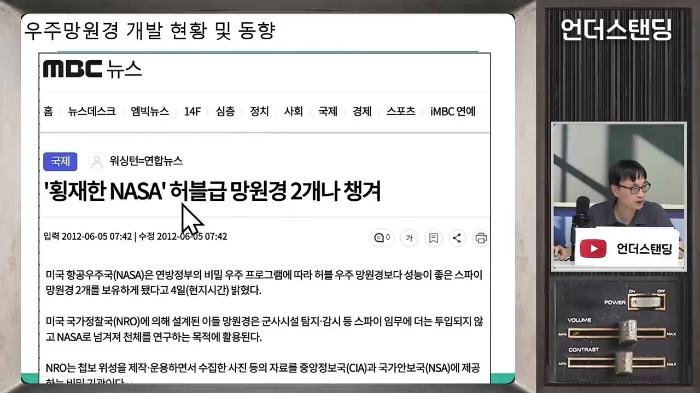
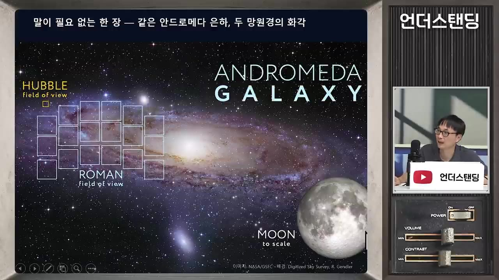
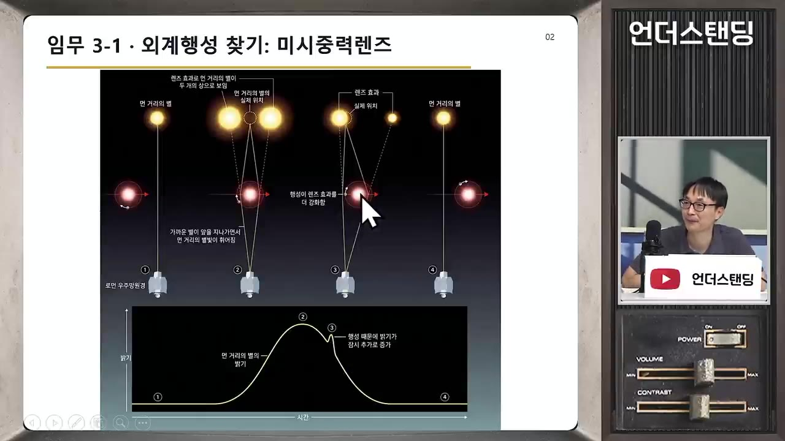
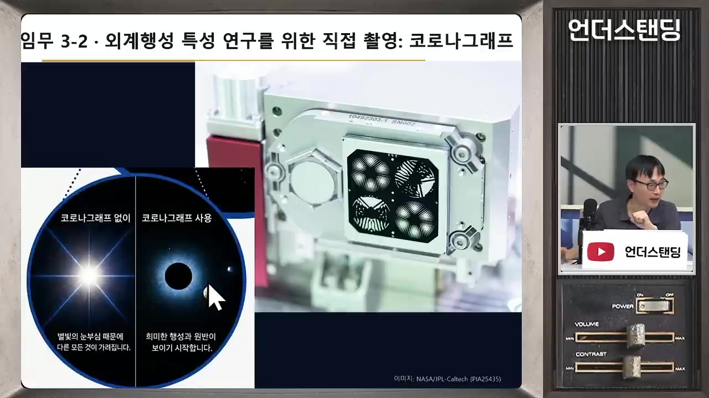

[황호성의 우주 몰아보기] 미군 창고에서 주운 괴물 망원경부터 우주 암흑물질의 발견, 인간이 우주의 중심을 찾지 못하는 이유까지 (서울대 물리천문학부 황호성 교수)
🎙️ 자막 대신 영상 음성을 받아써서 정리 (ko (음성 받아쓰기·GPU))
▶ 원본 영상 보기한눈에 보기
- 서울대 황호성 교수가 새 우주망원경 낸시 그레이스 로먼을 소개한다. 미 국가정찰국 창고에 있던 2.4m 예비 거울을 NASA가 받아 만들었고, 허블과 구경은 같지만 허블보다 훨씬 넓은 하늘을 한 번에 찍는다.
- 로먼의 임무는 세 가지다. 초신성·중력렌즈로 암흑에너지·암흑물질을 연구하고, 중력미세렌즈로 외계행성 후보를 대량으로 찾고, 코로나그래프로 행성을 직접 촬영한다.
- 우주가 가속 팽창한다는 정설이 흔들리고 있다. 연세대 이영옥 교수 팀이 초신성 관측에서 감속 팽창 가능성을 제기했고, 암흑에너지가 우주 상수가 아니라 시간에 따라 변할 가능성이 커지고 있다.
- 빅뱅의 중심은 말할 수 없다. 시공간이 빅뱅과 함께 생겨났고, 관측상 우주는 균질·등방해서 우리는 특별한 위치가 아니다.
- 신의 존재와 다중우주는 과학이 답할 수 없거나 아직 검증 중인 영역이며, 과학자는 신념이 아니라 관측 증거를 따라간다고 강조한다.
이런 분께 도움이 됩니다
- 새 우주망원경이 왜 필요한지, 허블·제임스 웹과 무엇이 다른지 알고 싶은 분.
- 암흑물질·암흑에너지 논쟁과 "우주의 중심은 어디인가" 같은 질문을 쉽게 이해하고 싶은 분.
핵심 내용
로먼 망원경의 탄생과 이름
- 미 국가정찰국(첩보위성 운영 기관)이 창고에 보관하던 여분의 2.4m 거울 두 개를 NASA에 넘겼다. (20:09)
- 망원경에서 가장 비싼 부품인 주경을 공짜로 얻은 셈이다.
- 거울은 마이크로미터 이하의 정밀도로 깎아야 하고, 우주에서는 코팅을 다시 할 수 없어 처음부터 잘해야 한다.
- 이름은 NASA 최초의 여성 수석 천문학자 낸시 그레이스 로먼에서 왔다. 의회를 설득해 허블 사업 예산을 따내 '허블의 어머니'로 불린다. (11:12)
- 2026년 8월 30일 팰컨 헤비 로켓으로 발사됐다. 지구에서 150만 km 떨어진 L2 지점(태양-지구 힘의 평형점)으로 3개월간 이동 중이다. (5:50)
- 연료가 예상보다 덜 들어 수명이 10년에서 22년으로 늘었다.
💡 가장 비싼 거울을 공짜로 얻은 덕에 나머지 설계에 투자할 수 있었다.

허블·제임스 웹과 로먼의 차이
- 비유하면 로먼은 숲 전체를 훑는 망원경, 허블·웹은 숲에서 특정 새를 자세히 보는 망원경이다. (2:32)
- 스펙 비교는 다음과 같다.
| 항목 | 허블 | 제임스 웹 | 로먼 |
|---|---|---|---|
| 거울 지름 | 2.4m | 6.5m | 2.4m |
| 검출기 | 기준 | - | 약 3억 화소(허블의 18배) |
| 한 번에 보는 시야 | 좁음 | 좁음 | 보름달 이상, 허블의 약 100배 |
- 같은 거울인데 시야가 넓은 이유는 광학계다. (29:47)
- 허블은 거울 두 번 반사 후 검출기 하나로 중심부만 쓴다.
- 로먼은 보정용 거울을 여러 개 더 넣어 가장자리까지 상이 또렷하고, 검출기도 넓게 깔았다. 카메라 렌즈를 여러 장 쓰는 것과 같은 원리다.
- 안드로메다 은하를 허블은 수없이 찍어야 하지만 로먼은 몇 번이면 된다. (40:02)
- 부경(보조 거울)이 빛을 가려도 빛은 회절하고, 지지대는 속눈썹처럼 초점이 맞지 않아 상에 찍히지 않는다. 대신 별 사진에 십자형 스파이크가 생기며 후처리로 보정한다.

암흑물질·암흑에너지와 팽창 논쟁
- 우주의 약 5%만 우리가 아는 물질이고, 나머지 95%가 암흑물질(약 25%)과 암흑에너지(약 70%)다. (1:08:19)
- 암흑물질은 중력으로 당기고, 암흑에너지는 우주를 밀어 가속 팽창시킨다.
- 1998년 초신성 관측으로 가속 팽창이 발견되어 노벨상을 받았다. 이를 설명하려고 암흑에너지를 도입했다. (48:18)
- 최근 이영옥 교수 팀은 초신성 관측만으로는 오히려 감속 팽창으로 보인다고 주장한다. (49:15)
- 다른 증거들은 여전히 가속 팽창을 지지하므로 학계에서 논쟁 중이다.
- 한 가지 실험에는 눈금이 처음부터 틀린 저울처럼 숨은 계통오차가 있을 수 있어 교차 검증이 필요하다.
- 현재 연구의 핵심은 암흑에너지가 시간에 따라 변하는가이며, 우주 상수(변하지 않는 값)는 아니라는 증거가 늘고 있다.
- 황 교수는 "신념 없이 관측 증거가 가는 대로 가겠다"고 말한다.
- 암흑물질은 도입 후 90년, 암흑에너지는 30년이 지났는데 아직 정체를 모른다. 지동설 이전의 주전원처럼 나중에 불필요한 개념이 될 수도 있다.
💡 암흑물질·에너지는 '발견'이 아니라 '설명을 위해 도입한 개념'이며 아직 검증 중이다.
로먼이 하는 일 세 가지
🔁 로먼의 주요 임무
- 초신성 탐색
- 중력렌즈 지도
- 외계행성 탐색
- 행성 직접 촬영
- 중력미세렌즈: 앞 별이 뒤 별 앞을 지나며 밝기가 오르내리는데, 행성이 있으면 곡선에 작은 혹이 생긴다. 지금까지 확인된 외계행성은 약 8,000개이며, 한국 KMTNet도 같은 방법을 쓴다.

- 지구처럼 적당한 거리의 '골디락스존' 행성이 목표이며, 후보 발굴이 1단계이고 코로나그래프 관측이 2단계다.

- 데이터는 관측 즉시 공개되므로 제안서보다 미리 어떤 연구를 할지 준비해 두는 것이 중요하다. 이 때문에 전 세계 연구자가 같은 데이터로 경쟁하고, 천문학은 국가 간 격차가 작아 한국도 수준이 높다.
우주의 중심과 인간의 위치
- 빅뱅은 어느 한 점에서의 폭발이 아니다. 시공간이 빅뱅과 함께 생겨났으므로 "어디서"를 물을 수 없다. (1:45:36)
- 관측 가능한 우주는 빛이 도달한 범위로 유한하지만, 우주 자체는 무한하게 태어났다고 설명한다.
- 풍선 표면의 개미(2차원)는 표면의 중심을 알 수 없다. 우리도 3차원에 사는 한 우주의 중심을 알 방법이 없다. (1:47:29)
- 진행자는 이 비유가 질문에 답이 되지 않는다고 계속 반박했다.
- 관측적 답은 따로 있다. 우주는 균질하고 등방해서 우리 위치가 특별하다는 증거가 없다. (1:57:42)
- 우리 주변 밀도도 특별히 낮은 정도가 아니다.
- 우리 은하는 '거대 인력체(Great Attractor)' 쪽으로 끌려가고 있으며, 그곳은 은하가 적어 암흑물질 덩어리일 가능성이 있다.
- 코페르니쿠스 혁명처럼, 우리가 특별하지 않다면 생명체도 우리뿐이지 않을 가능성이 크다는 것이 천문학자들의 생각이다.
신·종교·다중우주
- 빅뱅을 처음 제안한 르메트르는 신부였지만 MIT 물리학 박사·하버드 천문학 박사로서 과학적 근거로 이론을 만들었다. (2:09:55)
- 법칙이 누가 만들었는지는 과학이 답할 수 없고, 증거가 없는 한 개인의 신념 영역이라는 것이 황 교수의 입장이다. (2:14:56)
- 진행자는 신이 있다면 법칙만 만들고 손을 떼지 않았을 것이라며 무신론 쪽에 기운다고 말했다. (2:15:53)
- 인간에게 맞는 우주가 우연인지 설명하려는 가설이 다중우주(멀티버스)다. 법칙이 다른 우주가 10의 500승 개쯤 있으면 우리 우주는 그중 하나일 수 있다.
- 우주 급팽창(인플레이션) 이론에서 다중우주가 자연스럽게 나오며, 이를 검증하려는 시도가 진행 중이다.
💡 다중우주는 '우연'을 설명하려는 가설이며, 검증하는 순간 노벨상감이다.
기억할 숫자·인용
- 로먼 시야는 허블의 약 100배, 검출기는 약 3억 화소(허블의 18배)
- 로먼 수명 10년 → 22년(예상), 발사 2026년 8월 30일, L2까지 150만 km·3개월
- 제임스 웹 비용 약 13조 원(한국 과학기술 예산의 약 1/3~1/4 규모)
- 우주 구성: 보통 물질 5%, 암흑물질 약 25%, 암흑에너지 약 70%
- 가속 팽창 발견 1998년, 우주 나이 138억 년
- "우리는 우주의 근원적 의문에 과학으로 답한다" (한국천문연구원 정문 비석)
생각해볼 점
- 감속 팽창 주장은 아직 초신성 관측에 한한 것이고 교수 본인도 "잘 모르겠다"고 한다. 어느 한쪽으로 단정하기엔 이르다. (영상 내용)
- 영상 자막은 음성 받아쓰기라 일부 용어와 수치가 부정확할 수 있다. 예를 들어 우주 구성 비율(암흑물질 70% / 에너지 25% 로 말한 부분)은 일반적으로 알려진 값(암흑에너지 약 68~70%, 암흑물질 약 25~27%)과 반대로 들린다. 인용 전에 확인이 필요하다. (보충)
- 신·종교 대목은 출연자들의 개인 견해로, 과학적 결론이 아니다.
바로 해볼 일
- NASA 로먼 망원경 공식 페이지에서 첫 공개 이미지와 데이터 공개 일정을 확인해 보기
- 허블-르메트르 법칙과 중력렌즈의 원리를 한 번 더 찾아 읽어 보기
- 로먼 데이터 공개 후 한국 연구팀의 연구 소식을 검색해 보기